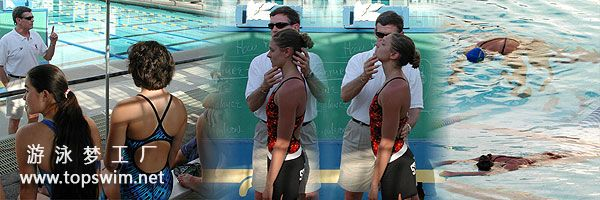
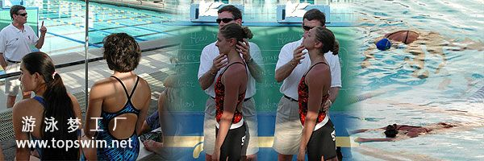

运动中的基本姿势
姿势
众所周知，在运动中所谓基本姿势是非常重要。因此，提高泳速首推姿势为第一要素。
下面的是姿势的图解，大家看一看这幅图中哪一种是好的姿势？
点击正中的黄色按纽，可以看到脊椎的弯曲和骨盆的位置。如你所见，左边的第一眼看上去好象是正确姿势但脊椎弯曲幅度很大且骨盆倾斜度也很大。相反，右边的姿势看上去很放松，脊椎弯曲幅度小，且骨盆的倾斜也比较小。也就是说右边的姿势是比较好的。
大家自己实践一下就能明白，一般的说以左边样子站立的人比较多。但以这个姿势站立，腰和肩用力较大，所以这种感觉腰部在使劲伸长的姿势，这是正引起腰部疼痛的原因。看右边的姿势，以能感觉肩的肌肉适度伸长为度，身体其它部位并没有负担。在水中漂浮的关键是必须要放松，而这个姿势恰（即右边的姿势）能让你在水中长时间地漂浮。
那么，如何作到这样的姿势呢？首先是要注意骨盆的方向。如果能让骨盆的倾斜度较小，就必能够和右边的姿势接近。骨盆较低作为第一要素，就是身体不要太使劲向上伸长，轻松地以放松的状态伸长就可以了。然后，腹部（图中蓝色的部分）用力。此处用力能有效地抑制脊椎的弯曲。这样，就能让全身处于放松状态。（其实这样最能扩张的是腰部，但并没有感觉到腰很紧张，那就是良好的姿势了。）
对于运动员或是为避免受伤来说，这一姿势的准确掌握是非常重要的。

游得更快意味着首先要尽量减小水阻.你可以通过更好的水中姿势和平衡来减小水的阻力.增加力量的优先权比减小水阻的优先权要小.Richard Quick,美国最好的教练之一,解释了你怎样做到这一点.
水阻和速度的二次方成正比例关系，泳员在水中前进所需的力量和前进速度的三次方成正比例关系。这意味着每一个运动员在提高手臂的划水和蹬腿的力量之后,游泳速度几乎没有提高.你感觉一下你靠着一堵墙游泳.你可以通过更好的水中姿势和平衡使身体成为成为动力从而提高速度,并且在一个完整的循环中令这种姿势保持在最优化的范围内。
众所周知，在运动中所谓基本姿势是非常重要。因此，提高泳速首推姿势为第一要素。
下面的是姿势的图解，大家看一看这幅图中哪一种是好的姿势？
点击正中的黄色按纽，可以看到脊椎的弯曲和骨盆的位置。如你所见，左边的第一眼看上去好象是正确姿势但脊椎弯曲幅度很大且骨盆倾斜度也很大。相反，右边的姿势看上去很放松，脊椎弯曲幅度小，且骨盆的倾斜也比较小。也就是说右边的姿势是比较好的。
大家自己实践一下就能明白，一般的说以左边样子站立的人比较多。但以这个姿势站立，腰和肩用力较大，所以这种感觉腰部在使劲伸长的姿势，这是正引起腰部疼痛的原因。看右边的姿势，以能感觉肩的肌肉适度伸长为度，身体其它部位并没有负担。在水中漂浮的关键是必须要放松，而这个姿势恰（即右边的姿势）能让你在水中长时间地漂浮。
那么，如何作到这样的姿势呢？首先是要注意骨盆的方向。如果能让骨盆的倾斜度较小，就必能够和右边的姿势接近。骨盆较低作为第一要素，就是身体不要太使劲向上伸长，轻松地以放松的状态伸长就可以了。然后，腹部（图中蓝色的部分）用力。此处用力能有效地抑制脊椎的弯曲。这样，就能让全身处于放松状态。（其实这样最能扩张的是腰部，但并没有感觉到腰很紧张，那就是良好的姿势了。）
对于运动员或是为避免受伤来说，这一姿势的准确掌握是非常重要的。



游得更快意味着首先要尽量减小水阻.你可以通过更好的水中姿势和平衡来减小水的阻力.增加力量的优先权比减小水阻的优先权要小.Richard Quick,美国最好的教练之一,解释了你怎样做到这一点.
水阻和速度的二次方成正比例关系，泳员在水中前进所需的力量和前进速度的三次方成正比例关系。这意味着每一个运动员在提高手臂的划水和蹬腿的力量之后,游泳速度几乎没有提高.你感觉一下你靠着一堵墙游泳.你可以通过更好的水中姿势和平衡使身体成为成为动力从而提高速度,并且在一个完整的循环中令这种姿势保持在最优化的范围内。